Te veel plannen.
Te weinig focus.
Alles lijkt prioriteit. Daardoor wordt kiezen moeilijk en blijft echte vooruitgang uit.
Van scherpe keuzes tot zichtbare resultaten.
We vertalen strategie naar concrete actie, betrokken teams en blijvende vooruitgang.
VERTROUWEN OM
VOORUIT TE GAAN ↗
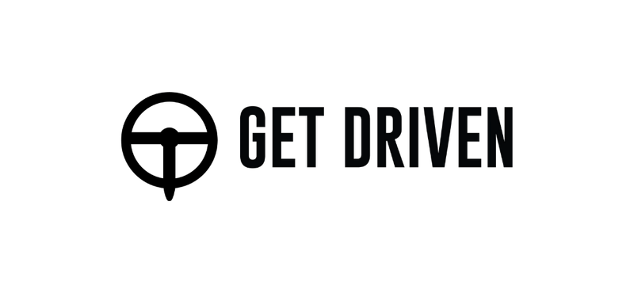
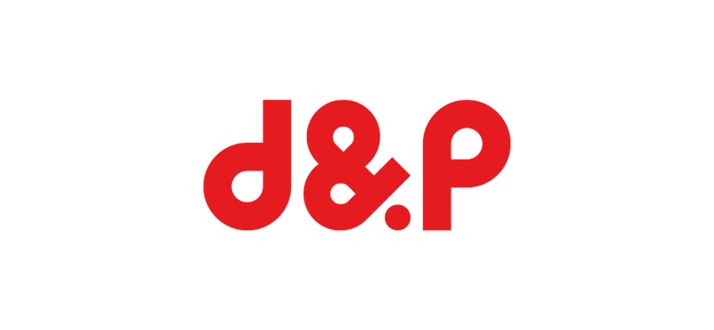
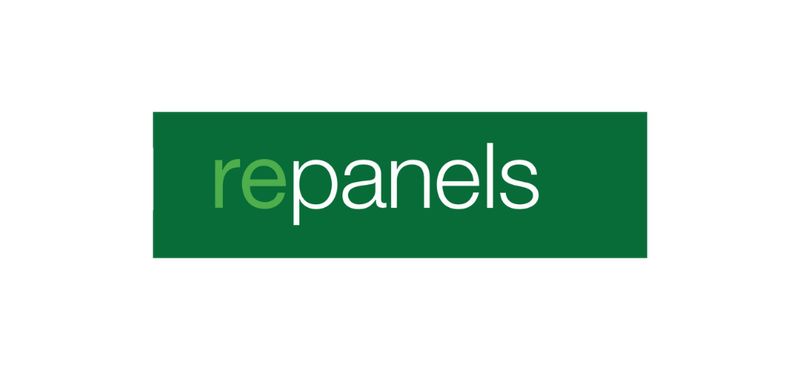
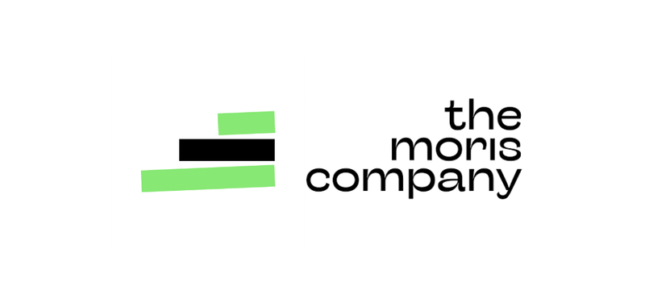
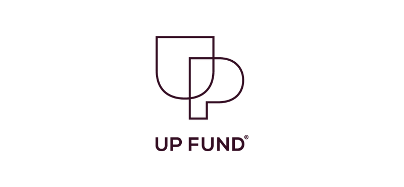
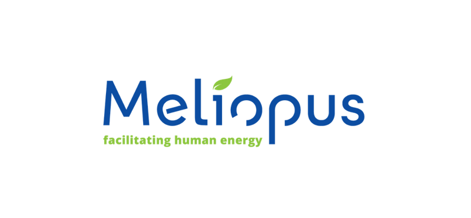
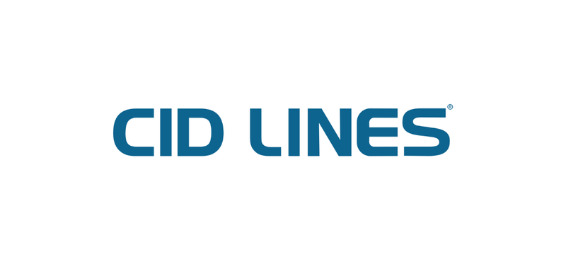
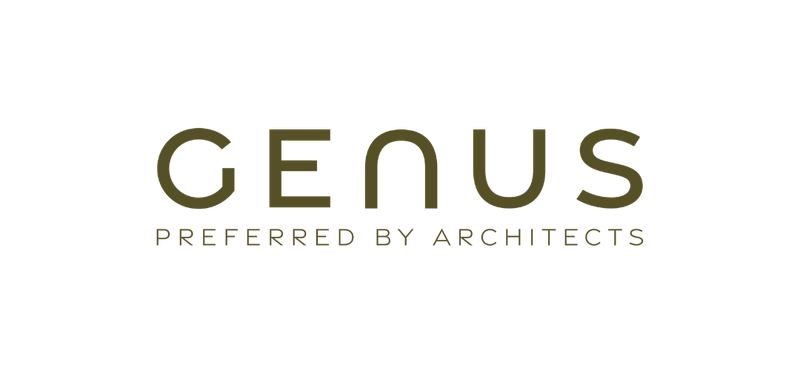
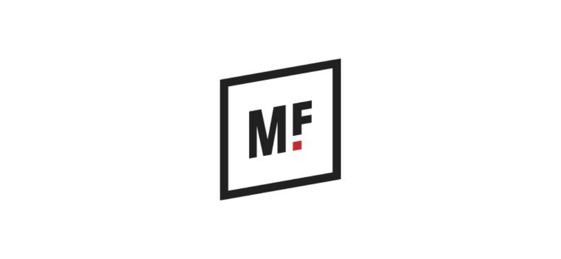
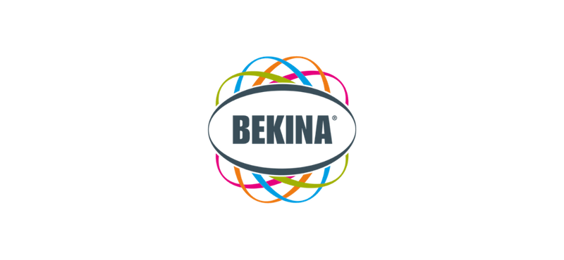
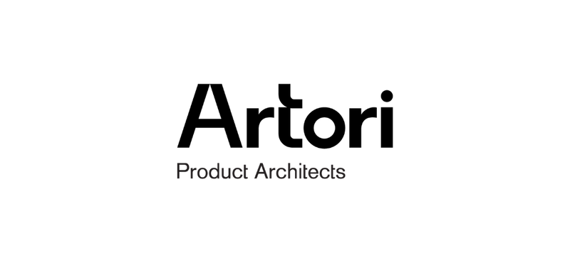
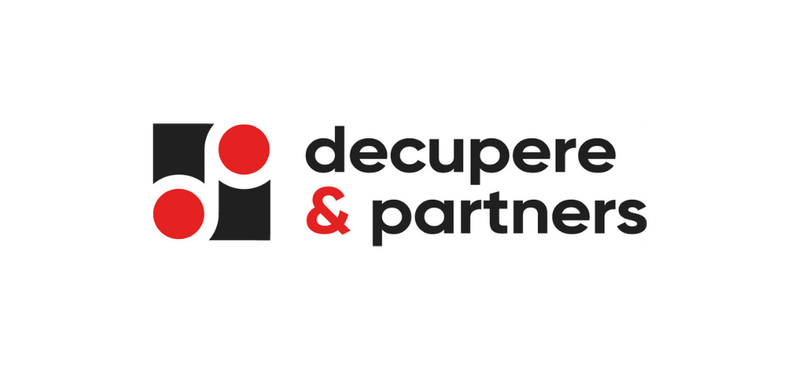
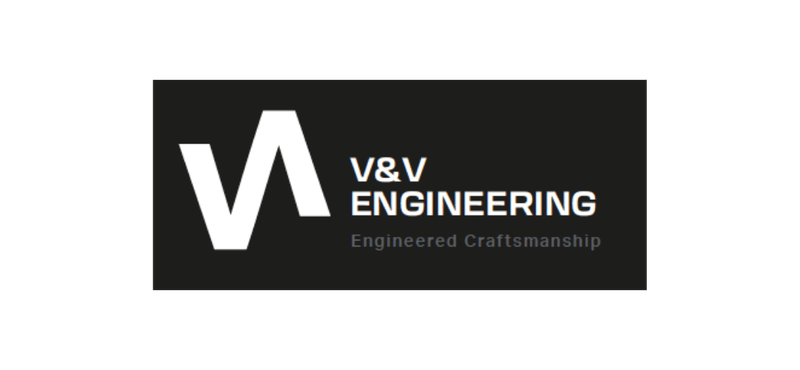
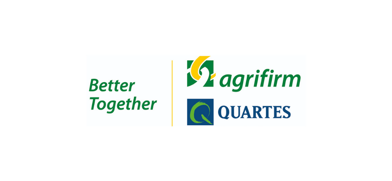
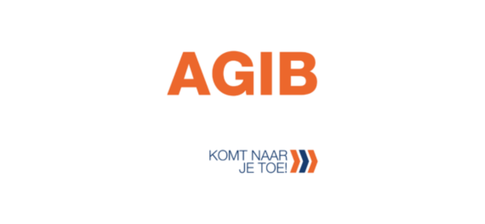
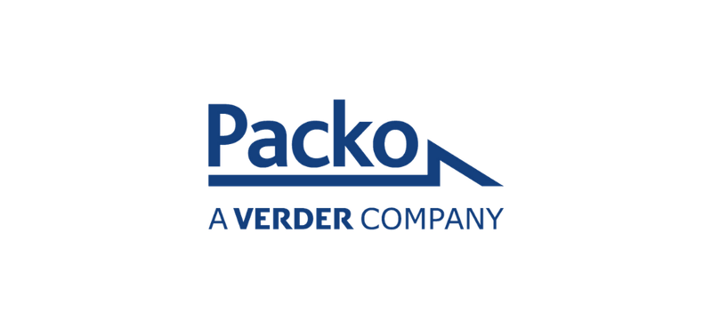
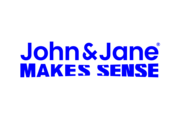
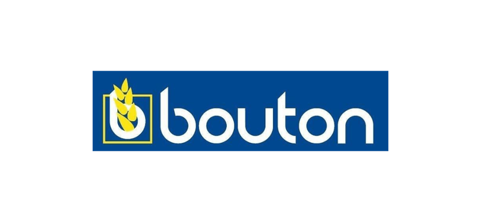
Goede strategie zie je
in beweging.
bij CID LINES. Een mooi voorbeeld van wat er gebeurt wanneer strategie en uitvoering elkaar vinden.
Bekijk de case ↗Je weet waar je naartoe wil. Maar tussen plannen maken en samen vooruitgaan zit vaak een wereld van verschil.
Alles lijkt prioriteit. Daardoor wordt kiezen moeilijk en blijft echte vooruitgang uit.
De richting is bepaald, maar de vertaling naar teams en dagelijkse keuzes ontbreekt.
Mensen werken hard, alleen niet altijd aan dezelfde doelen. Tijd voor verbinding.
Van de grote keuzes tot wat er morgen anders gaat: we verbinden strategie, mensen en uitvoering.
Maak scherpe keuzes over waar je naartoe wil en hoe je daar geraakt.
Vertaal je ambities naar een commerciële aanpak die klanten én teams in beweging brengt.
Breng mensen, structuur en doelen samen rond wat er echt toe doet.
OKR's maken de stap van ambitie naar actie concreet. Focus, alignment en vooruitgang — samen.
Geen dik rapport dat stof verzamelt. Wel een duidelijke richting, de juiste gesprekken en stappen die je samen zet.
Durf de juiste vragen te stellen en ambities uit te spreken.
↗Maak keuzes en vertaal ze naar een heldere koers.
↗Breng de strategie tot leven in de dagelijkse praktijk.
↗Volg de voortgang op, leer en stuur samen bij.
↗Strategie krijgt pas betekenis wanneer er iets verandert. Dit is wat beweging kan opleveren.
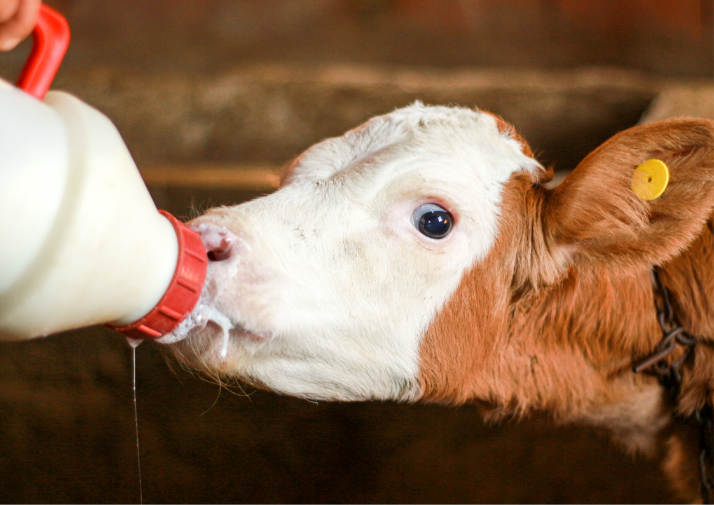
Bij CID LINES werd strategische focus vertaald naar commerciële vooruitgang.
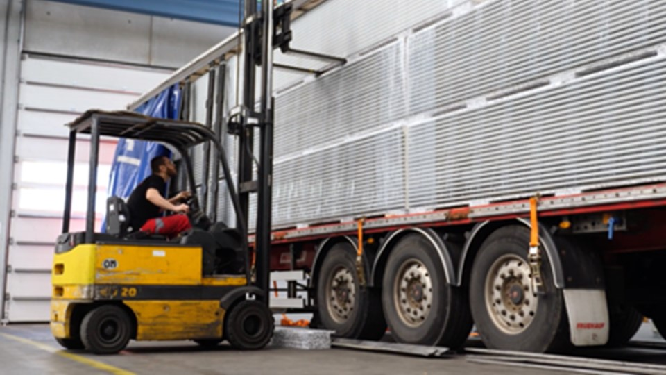
Van versnipperde merken en losse inzichten naar één duidelijke koers. Klantonderzoek en gesprekken vormden de basis voor een helder merkverhaal, een marketingplan en digitale fundamenten.
Ontdek de case ↗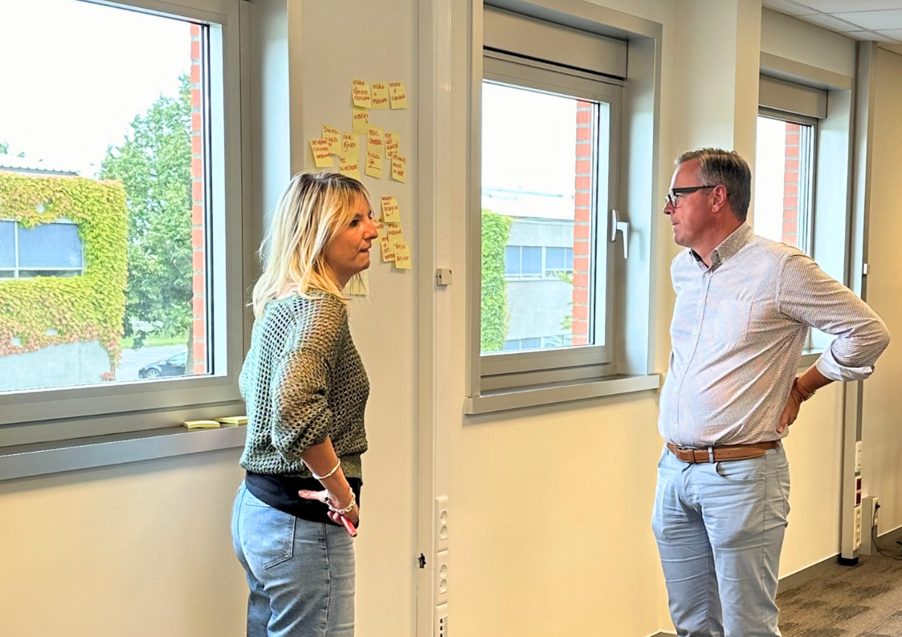
Wat ervaren klanten écht? Voor d&p vertaalden we feedback naar heldere segmenten, concrete keuzes en een actief ambassadeursnetwerk, binnen én buiten de organisatie.
Ontdek de case ↗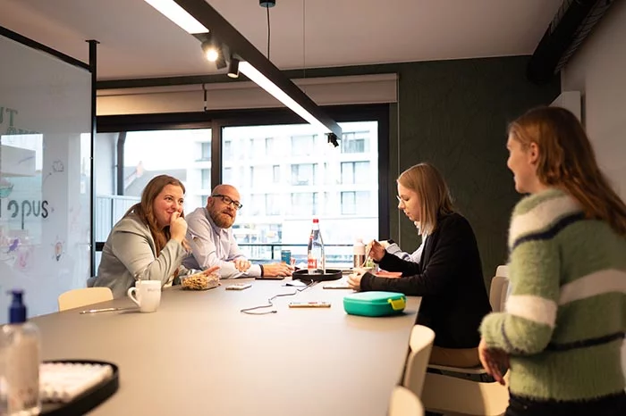
Van inzichten naar actie: samen met Meliopus werkten we aan merk-DNA, werkgeversverhaal, segmentatie en een go-to-marketaanpak die commerciële groei ondersteunt.
Ontdek de case ↗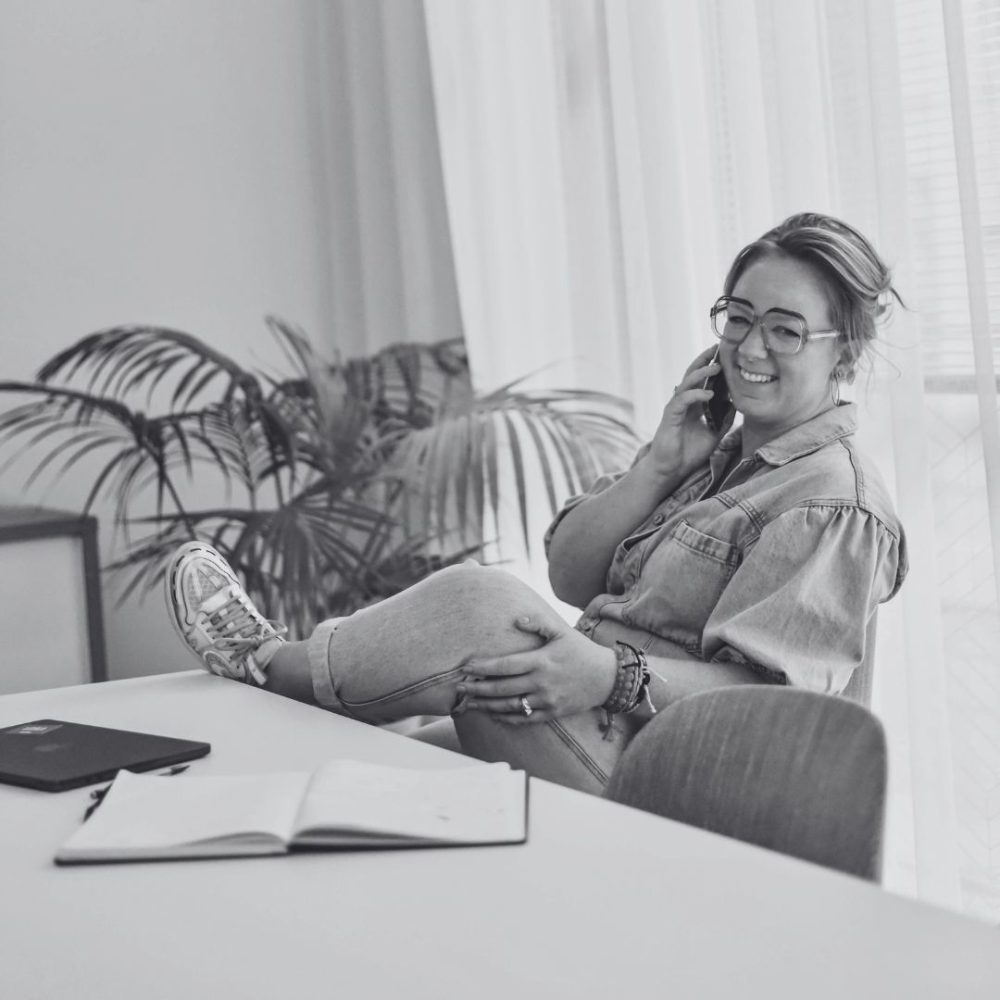
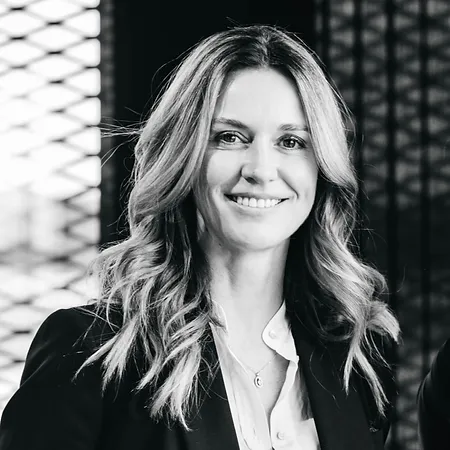
Een goed plan maak je niet alleen. Shari, Helena en het collectief brengen mensen samen, stellen de vragen die ertoe doen en werken mee aan wat volgt.
Rechtuit, betrokken en altijd met beide voeten in de praktijk.
Meer over ons ↗Een goed gesprek is vaak het begin van een heldere koers. Schuif aan, we luisteren graag.
Plan een spiegelmoment ↗